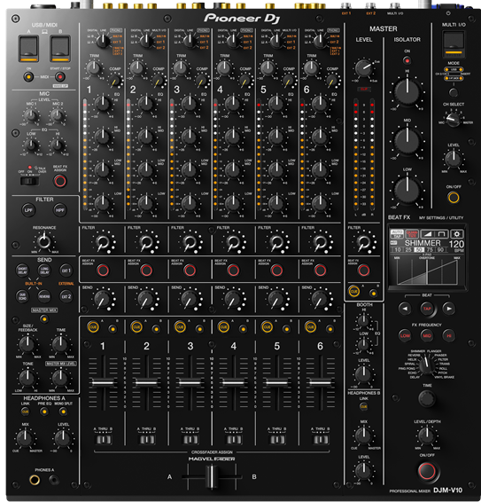
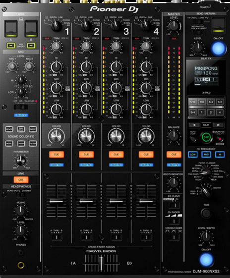
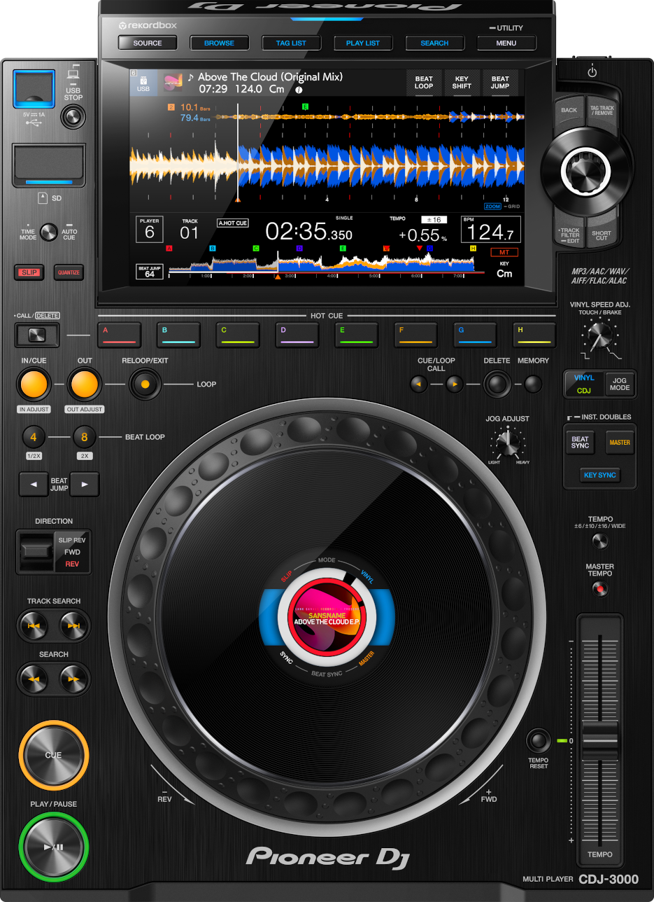
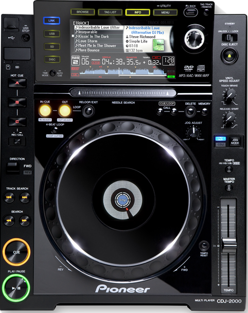

Inicio
Nuestros productos
Tiendas y contacto
MIXER Y REPRODUCTORES
MIXERS

DJM-V10
Canales para equalizar 6.
Entradas:6 DIGITAL (Coaxial), 6 LINE (RCA) y 4 PHONO (RCA).
Salidas:2 MASTER (XLR, RCA), 1 BOOTH (Jack TRS 1/4 pulgada), 4 MONITORES DE AUDÍFONOS (Jack 1/4 pulgada, mini-jack), 1 REC OUT (RCA), 1 DIGITAL (AES/EBU) y 1 MIDI (DIN).
Control Scratch:rekordbox, Serato DJ Pro y TRAKTOR PRO 3.

DJM 900 nexus 2
Canales para equalizar 4.
Entradas:4 DIGITAL (Coaxial), 4 CD/LINE (RCA), 4 PHONO (RCA) y 2 MIC (Combo XLR/TRS Jack, TRS Jack 1/4 pulgada).
Salidas:2 MASTER (XLR, RCA), 1 BOOTH (Jack TRS 1/4 pulgada), 2 MONITORES DE AUDÍFONOS (Jack 1/4 pulgada, mini-jack),1 REC OUT (RCA) y 1 DIGITAL (Coaxial).
Control Scratch:rekordbox dvs ready (not included).
REPRODUCTORES

CDJ-3000
Pantalla tactil LCD HD 9 pulgadas.
Medios reproductibles:USB, tarjeta SD, iphone y computadoras mac windows.
Compatible con rekordbox, serato y traktor PRO 3.
Cuenta con unidad de microprocesamiento es la primera que hemos puesto en un CDJ.rendimiento estable, nuevas funciones avanzadas y más fluides en general.

CDJ-2000
Pantalla LCD, no tactil, no HD de 6 pulgadas.
Medios reproductibles:USB, tarjeta SD y CD.
Compatible con rekordbox (version antigua).